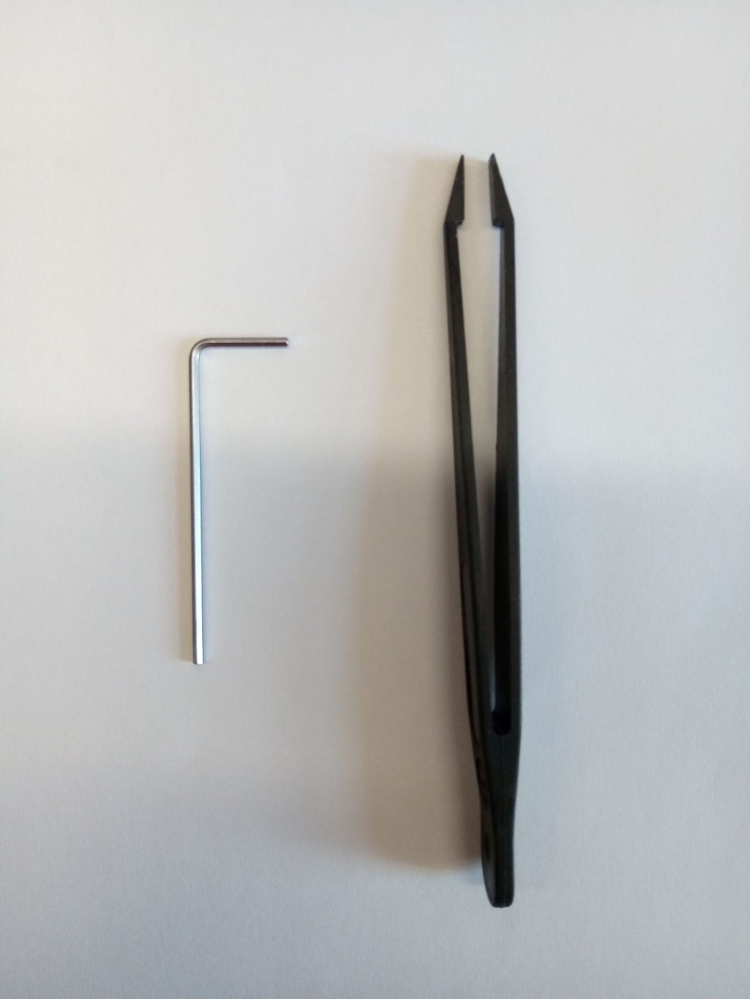
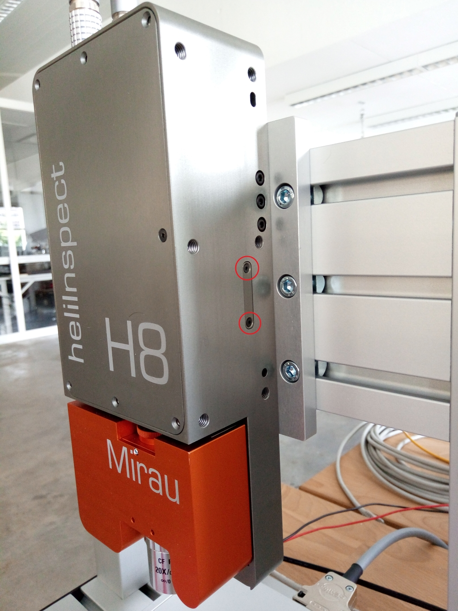
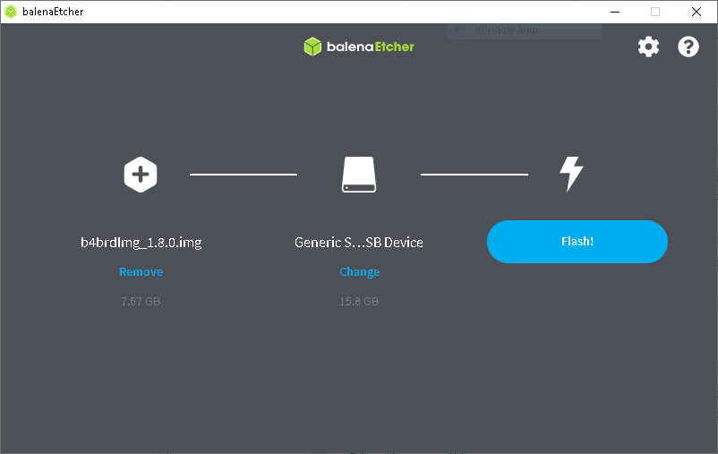
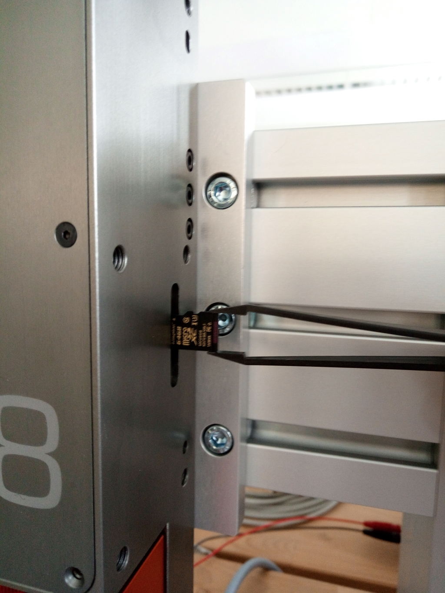

TN_15.1.0.1: heliBrd B4 SD Card Re-Writing
Challenge: Corrupt SD Card Content
heliBrd B4 based devices (like heliInspect H8, heliCam C4) store a file system on an SD Card. Updates of this file system are handled using the UpdateTool application (comes with C4Utility installer) and image package or update package files (available for download on heliotis webpage). The file system is robust, i.e. it tolerates conditions such as power interruption during use. Only in exceptional failure cases the file system may be corrupted to the point of boot failures. In such rare cases, however, the device becomes inaccessible throught its ethernet interface even after attempts to reboot it (power cycle).
Note
If you suspect your file system to be corrupt contact support@heliotis.ch before proceeding with solution described below.
Solution: SD-Card Re-Writing
To recover from a corrupt file system load a full SD-Card image to the device. The required steps are as follows.
Remove SD-Card from heliInspect H8 or heliCam C4
- Required tools (figure Fig. 1):
1.5mm hexagonal socket wrench (Allen key)
tweezers
{kind=link}

Fig. 1 Required Tools
- Steps:
Switch off the power supply.
Remove SD-Card cover. Unscrew the two screws on the right hand side of heliInspect H8 (figure Fig. 2). Remove the cover.
Remove the SD-Card. The SD-Card holder has a push/pull mechanism. To remove the SD-Card, push the card with a thin rod (e.g. the back of your tweezers). A soft click should be audible. Afterwards, the card pops out a bit and can be removed carefully. (e.g. with the tweezers)
{kind=link}

Fig. 2 SD-Card Cover Screws
Note
SD card is not accessible for heliInspect H9 devices. Don’t attempt to open H9 devices witout heliotis assistance.
Load an SD-Card Image
- Required software:
balenaEtcher https://www.balena.io/etcher/
heliBoard B4 Image (e.g. b4brdImg_1.8.0.zip)
- Steps:
Extract the *.zip file. (It contains a single *.img file)
Insert the card into PC’s SD-Card slot and start balenaEtcher
Push the Flash from file button and select the extracted *.img file
Push the Select target button and select the SD-Card drive.
The final selections are shown in figure Fig. 3. Now push the Flash! button to write the image to the SD-Card (PC administrator privileges are required)
After a successful write procedure, remove the SD-Card from the PC and insert it into the heliInspect H8.
{kind=link}

Fig. 3 balenaEtcher selection
Insert an SD-Card to heliInspect/heliCam Device
- Steps:
Insert the SD-Card into heliInspect H8. Use tweezers to hold the card and insert it carefully into the SD-Card slot. The SD-Card slot has a push/pull mechanism. After inserting the SD-Card push it carefully until a soft click is audible. The SD-Card orientation is shown is figure Fig. 4.
Mount the cover with the two screws.
{kind=link}

Fig. 4 SD-Card Orientation
Document History
Version |
Date |
Changes |
Responsible |
|---|---|---|---|
15.1.0.0 |
19-05-2022 |
initial version |
sm |
15.1.0.1 |
14-11-2022 |
review, typos |
cl |